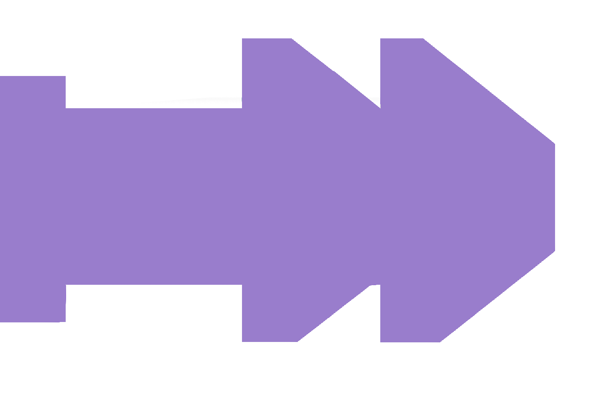
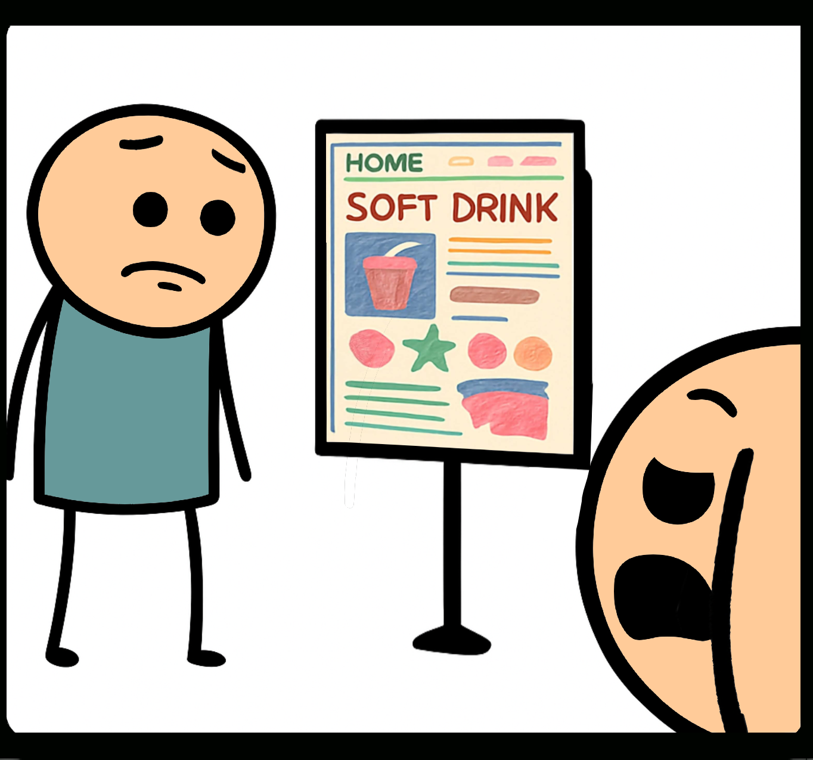
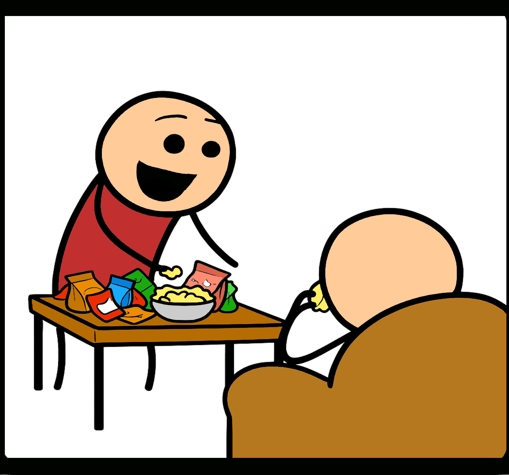

Short Backstory

Klicke, um zu überspringenMein Entwickler Freund präsentiert mir stolz die Website,
die er ohne UX und ohne Designer erstellt hat.
die er ohne UX und ohne Designer erstellt hat.


Ich erkläre ihm, dass hinter dem Programmieren
ein umfangreicher Designprozess steckt.
ein umfangreicher Designprozess steckt.
Der Tisch wird gedeckt und ich erkläre ihm, was ein Design-Sprint ist.
Und was als nächstes ansteht...
Und was als nächstes ansteht...


Und die Ideen fliegen nur so durch den Raum.
Probleme werden definiert, Pain Points gelöst und Recherche getrieben.
Probleme werden definiert, Pain Points gelöst und Recherche getrieben.